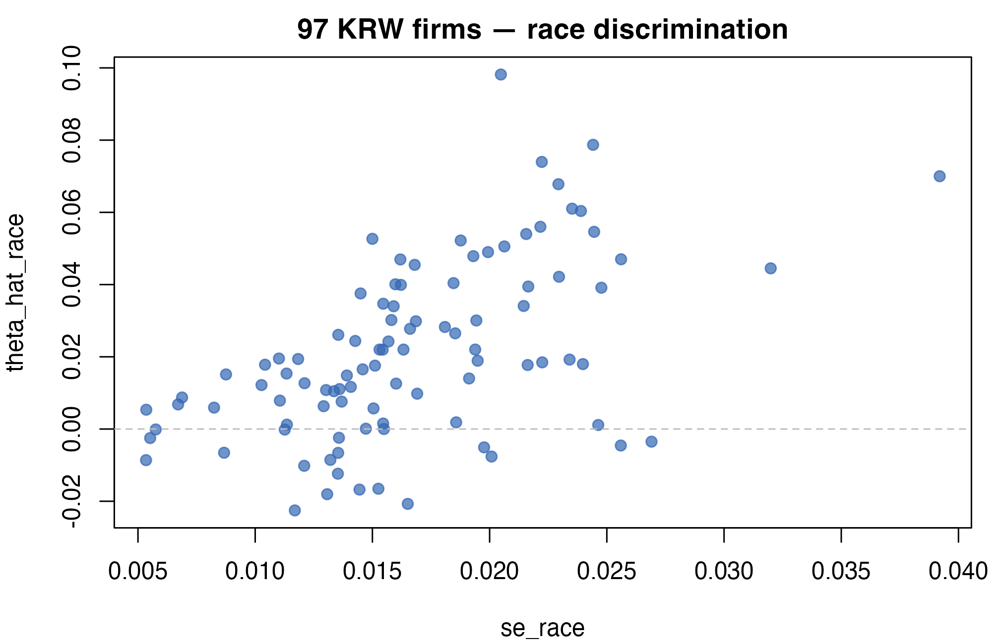
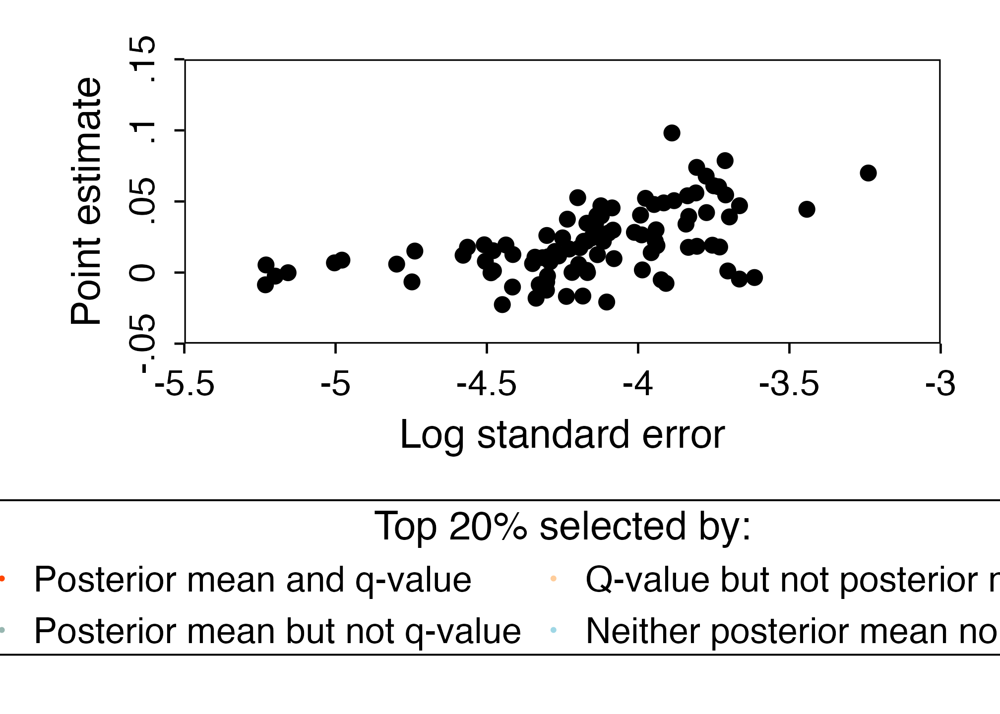

A2: Discrimination workflow - the full six-stage recipe on KRW firms
JoonHo Lee
2026-05-11
Source:vignettes/a2-discrimination-workflow.Rmd
a2-discrimination-workflow.RmdAbstract
This is the workhorse vignette: a full six-stage empirical
Bayes recipe applied to the Kline-Rose-Walters (2022)
correspondence study of 97 large U.S. firms. You move stage by
stage — input wrapping, precision-dependence diagnosis,
standardization, log-spline deconvolution, posterior shrinkage,
and FDR-based classification — with every intermediate object
inspected via the package’s print and CLI-formatter output, and
every figure rendered as a Lane-A protected target with bit-exact
match against the companion fixture registry. By the end you
reproduce the canonical six-panel figure family of the companion
book and identify the same 27 firms that Walters (2024) flagged as
systematic race discriminators (CD-78 criterion, raw Storey q-rule
at full-precision pi-hat = 0.3918), bit-exact in
replication_mode = TRUE.
1. Why this dataset matters
The Kline-Rose-Walters correspondence study (Kline et al. 2022) sent ~83 000 fictitious
applications to 108 of the largest U.S. employers, varying applicant
race and gender. After filtering for firms with adequate callback rates
and posting volumes, 97 firms remain — and each gets two discrimination
point estimates (race, gender) with cluster-robust standard errors.
Those 97 estimates and their SEs are bundled in
krw_firms.
“Empirical Bayes shrinkage on the KRW firms reduces mean squared error by 57% for race estimates and 75% for gender estimates, while preserving the rank order of the top discriminators.” — Walters (Walters 2024, sec. 2.2)
Below we re-run that recipe stage by stage.
Execution ≈ 1 min (cached); reading + reflection ≈ 90 min.
2. Stage 0 — Load and inspect
data(krw_firms)
str(krw_firms)
#> 'data.frame': 97 obs. of 5 variables:
#> $ firm_id : int 1 2 3 4 5 7 8 9 10 11 ...
#> $ theta_hat_race : num 0.04696 0.022 0.04216 0.00571 0.03408 ...
#> $ se_race : num 0.0162 0.0153 0.023 0.015 0.0215 ...
#> $ theta_hat_gender: num -0.02287 0.058 -0.09103 0.01499 -0.00699 ...
#> $ se_gender : num 0.0251 0.032 0.0355 0.0249 0.0252 ...
#> - attr(*, "sample_stats")=List of 5
#> ..$ full_observations : int 83643
#> ..$ full_firms : int 108
#> ..$ dropped_observations : int 4733
#> ..$ filtered_firms : int 97
#> ..$ filtered_observations: int 78910A quick look at the joint distribution of estimates and SE — the foundation of every later stage.
op <- par(mar = c(4, 4, 2, 1))
plot(krw_firms$se_race, krw_firms$theta_hat_race,
pch = 19, col = rgb(0.2, 0.4, 0.7, 0.7),
xlab = "se_race", ylab = "theta_hat_race",
main = "97 KRW firms — race discrimination")
abline(h = 0, lty = 2, col = "gray")
Raw discrimination point estimates against their standard errors. Each dot is a firm; cluster by signal-on-noise here is the first hint of precision dependence.
par(op)3. Stage 1 — Wrap the input
race <- eb_input(
theta_hat = krw_firms$theta_hat_race,
s = krw_firms$se_race,
unit_id = krw_firms$firm_id
)
print(race)
#> <eb_estimates>
#> units: 97
#> source: manual
#> standardized: no
#> theta_hat: mean=0.021 sd=0.024 range=[-0.023, 0.098]
#> s: mean=0.017 range=[0.005, 0.039]eb_input() performs validation, attaches metadata, and
produces an eb_estimates object. All later stages accept
estimates = named arguments — never positional.
4. Stage 2 — Diagnose precision dependence
Before fitting a prior, test whether the SE correlates with the signal (level and variance dependence).
diag <- eb_diagnose(estimates = race)
cat(diag$conclusion, "\n")
#> level dependence detected; no strong evidence of variance dependence
format_eb_diagnostic_cli(diag)The $conclusion line gives a one-sentence verdict. The
CLI panel breaks it into the two underlying regressions (level vs
log(s), variance vs log(s)). For deep
treatment of this stage, see
vignette("a4-diagnostics-and-standardization").
5. Stage 3 — Standardize
If the diagnostic flagged precision dependence (which it does for KRW
race), we transform (theta_hat, s) to residual scale
(r, s_r) before deconvolution.
std <- eb_standardize(estimates = race, diagnostic = diag)
print(std)
#> <eb_estimates>
#> units: 97
#> source: manual
#> standardized: yes
#> theta_hat: mean=0.866 sd=1.039 range=[-2.459, 3.431]
#> s: mean=0.855 range=[0.497, 1.525]Recall (HOLE chapter): precision-dependence models come in two public flavors — multiplicative and additive — and
eb_diagnose()picks the better-fitting form. (Walters 2024, sec. 2.6 & 3.7)
6. Stage 4 — Deconvolve the prior
This is where eb_deconvolve() fits the log-spline mixing
distribution on the residual scale. The deepest part of the recipe — and
the one that benefits the most from the
replication_mode = TRUE lock on KRW.
Why we never specified a prior: we did not have to. Robbins’ insight (Robbins 1956) is that with enough units, the data themselves identify the prior up to identifiability constraints. The log-spline parameterization just gives us a finite-dimensional, optimizable representation.
prior <- eb_deconvolve(estimates = std)
print(prior)
#> <eb_prior>
#> method: logspline
#> scale: r
#> support: 1000 points range=[0.000, 3.431]
#> hyperparameters:
#> mu = 0.022
#> sigma_theta = 0.018
#> sigma_theta_sq = 0.000
#> penalty: 0.1157. Stage 5 — Shrink posteriors
The posterior summaries collapse the prior and the per-firm likelihood into shrunken point estimates and uncertainties.
post <- eb_shrink(estimates = std, prior = prior)
print(post)
#> <eb_posterior>
#> method: nonparametric
#> units: 97
#> posterior_mean: mean=0.021 range=[0.002, 0.074]
#> variance_ratio: mean=0.275 range=[0.060, 0.896] (NP path; unclipped)Shrinkage and FDR are independent steps, right?
Not quite. Shrinkage produces the posterior summaries that feed the q-value computation in Stage 6. The two stages share the same prior and the same posterior — q-values are a post-hoc summary of the shrunken posterior under the null.
The nonparametric vs linear shrinkage comparison is the canonical visualization of what just happened.
# NOTE: plot_shrinkage_comparison() expects the companion fixture columns
# `theta_star`, `theta_star_lin`, `theta_star_lin_alt`. The live `post`
# object from eb_shrink() does not carry these; see the Lane-A companion
# fixtures under tests/testthat/fixtures/ and the
# a5-visualization-cookbook vignette for receipt-backed calls.
plot_shrinkage_comparison(
post,
comparison = "linear",
characteristic = "race"
)8. Stage 6 — Classify and rank
The FDR-controlled selection — the public output of the recipe.
cls <- eb_classify(
estimates = std,
posterior = post,
method = "qvalue",
fdr_level = 0.05,
selection_share = 0.20
)
format_eb_classification_cli(cls)Why not just rank by p-value?
Ranking by p-value ignores prior mass. The q-value asks: of the units I call significant, what fraction are actually null? Storey’s estimates that fraction directly from the data — no Bonferroni padding required.
The protected CD-78 target says 27 firms. We hit it:
n_selected <- length(selected_units(cls))
n_selected
#> [1] 27
# CD-78 protected target: 27 firms with full-precision pi0 = 0.3918 (DEC-197-2)
stopifnot(identical(n_selected, cd78_selection_count()))9. The decision frontier
# `eb_posterior_grid()` requires `estimates` and `prior` (not a posterior
# object). Build the live grid here, then overlay the observed posteriors.
fit_grid <- eb_posterior_grid(estimates = std, prior = prior)
plot_decision_frontier(
observed = post,
grid = fit_grid,
classification = cls,
characteristic = "race",
selection_share = 0.20
)
Decision frontier on the (theta_hat, s) plane for KRW race. The curve marks the q < 0.05 boundary; firms above it are selected by the FDR rule.
10. All in one with eb()
Stages 1–6 collapse into a single eb() call, which is
what most users will reach for in practice:
fit <- eb(
x = race$theta_hat,
s = race$s,
unit_id = race$unit_id,
control = eb_control(
replication_mode = TRUE,
fdr_threshold = 0.05
)
)
print(fit)
#> <eb_fit>
#> method: nonparametric
#> units (J): 97
#>
#> log-likelihood: 228.667
#>
#> PRIOR ----
#> <eb_prior>
#> method: logspline
#> scale: r
#> support: 1000 points range=[-0.023, 0.098]
#> hyperparameters:
#> mu = 0.021
#> sigma_theta = 0.020
#> sigma_theta_sq = 0.000
#> penalty: 0.013
#>
#> POSTERIOR ----
#> <eb_posterior>
#> method: nonparametric
#> units: 97
#> posterior_mean: mean=0.019 range=[-0.004, 0.073]
#> variance_ratio: mean=0.543 range=[0.226, 0.932] (NP path; unclipped)
#>
#> call: eb(x = race$theta_hat, s = race$s, unit_id = race$unit_id, control = eb_control(replication_mode = TRUE, fdr_threshold = 0.05))In replication_mode = TRUE the package locks seven
control parameters (knots, grid, optimizer, etc.) to the values that
reproduce the MATLAB fixture to
tolerance. See
vignette("m5-replication-and-reproducibility") for the lock
table.
Practical pitfalls
-
Skipping
eb_diagnose()and forcing nonparametric. The diagnostic exists for a reason: KRW race has strong level dependence, and skipping standardization will produce an over-smoothed prior or fail to converge. -
Comparing
replication_mode = FALSEto MATLAB. The default path is tuned for engineering stability, not bit-exact MATLAB parity. Usereplication_mode = TRUEfor that. -
alpha_fdrversusfdr_level. Theeb_control()argument isfdr_threshold; theeb_classify()argument isfdr_level. Use named arguments.
Where to next
-
Diagnostics depth:
vignette("a4-diagnostics-and-standardization")unpacks Stage 2 — precision dependence — in detail. -
Theory of deconvolution:
vignette("m3-logspline-deconvolution")deriveseb_deconvolve()from first principles. -
FDR theory:
vignette("m4-precision-dependence-and-fdr")proves the FDR control bound and explains the DEC-197 conventions.
Provenance
sessionInfo()
#> R version 4.5.1 (2025-06-13)
#> Platform: aarch64-apple-darwin20
#> Running under: macOS Tahoe 26.2
#>
#> Matrix products: default
#> BLAS: /Library/Frameworks/R.framework/Versions/4.5-arm64/Resources/lib/libRblas.0.dylib
#> LAPACK: /Library/Frameworks/R.framework/Versions/4.5-arm64/Resources/lib/libRlapack.dylib; LAPACK version 3.12.1
#>
#> locale:
#> [1] en_US/en_US/en_US/C/en_US/en_US
#>
#> time zone: America/Chicago
#> tzcode source: internal
#>
#> attached base packages:
#> [1] stats graphics grDevices utils datasets methods base
#>
#> other attached packages:
#> [1] ggplot2_4.0.2 ebrecipe_0.5.0
#>
#> loaded via a namespace (and not attached):
#> [1] gtable_0.3.6 jsonlite_2.0.0 dplyr_1.2.0 compiler_4.5.1
#> [5] tidyselect_1.2.1 dichromat_2.0-0.1 jquerylib_0.1.4 splines_4.5.1
#> [9] systemfonts_1.3.1 scales_1.4.0 textshaping_1.0.1 yaml_2.3.12
#> [13] fastmap_1.2.0 R6_2.6.1 generics_0.1.4 knitr_1.50
#> [17] htmlwidgets_1.6.4 tibble_3.3.1 desc_1.4.3 bslib_0.9.0
#> [21] pillar_1.11.1 RColorBrewer_1.1-3 rlang_1.1.7 cachem_1.1.0
#> [25] xfun_0.53 fs_1.6.6 sass_0.4.10 S7_0.2.1
#> [29] cli_3.6.5 withr_3.0.2 pkgdown_2.2.0 magrittr_2.0.4
#> [33] digest_0.6.39 grid_4.5.1 lifecycle_1.0.5 vctrs_0.7.2
#> [37] evaluate_1.0.5 glue_1.8.0 farver_2.1.2 ragg_1.4.0
#> [41] rmarkdown_2.30 tools_4.5.1 pkgconfig_2.0.3 htmltools_0.5.8.1